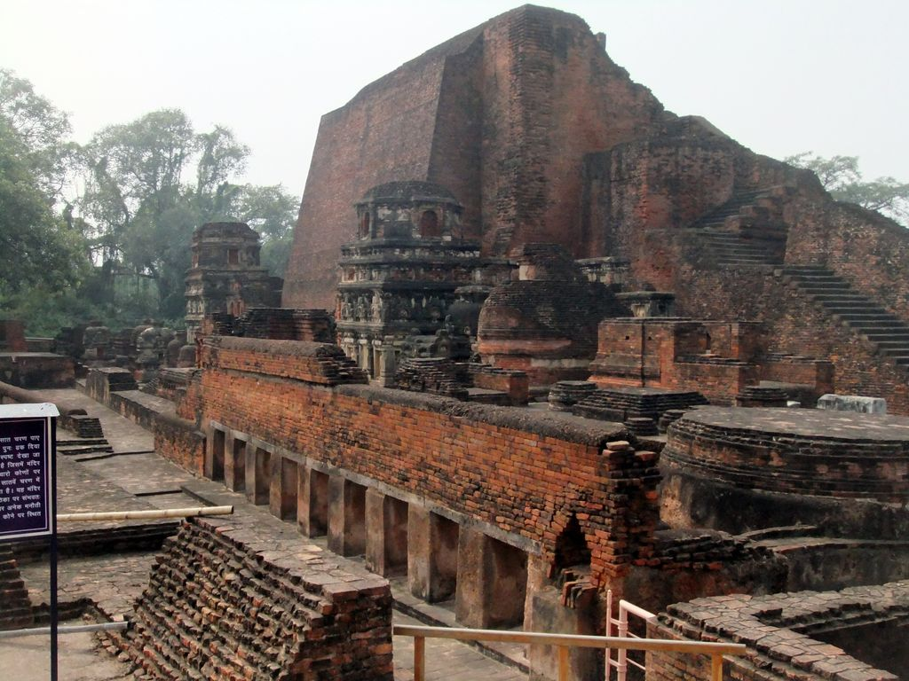

The name Nalanda resonates as an inspiration to anybody who heard about this place as the nurturing ground of the first residential international university of the world for great learning during the era when most of the other countries of the world were at the very nascent stage of development. Today, even as the ruins of that glorious past continue to mesmerise the present. The district, well -connected by network of roads and railways, had been a cradle of multiple religious evolutions. Apart from Buddhism, the Jainism, Sufism and Hinduism have also flourished in this region with the patronage from the generations of benevolent rulers. The district situated at the south of Patna .
